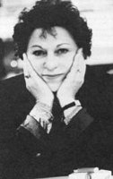

(1931 – )

Hem romanlarıyla hem de öyküleriyle Türk kadın yazarlar arasında özgün bir yere sahip olan Leyla Erbil, yazarlığı aynı zamanda yaşamı anlama mücadelesinin de bir parçası olarak gören sanatçılardan... Nobel Edebiyat Ödülü almaya aday gösterilen ilk kadın yazarımız olan Erbil, kişisel ve toplumsal her türlü boyunduruğa başkaldıran kimliğiyle tanındı.
Leyla Erbil orta sınıf bir ailenin üç kız çocuğunun ortancası olarak doğdu. İlkokul, ortaokul ve liseyi İstanbul'da okudu. İstanbul Üniversitesi'nde İngiliz Edebiyatı bölümünde eğitim gördü. Son sınıfta buradan ayrıldı. Çeşitli işlerde çalıştı. Evlenerek bir süre Ankara ve İzmir'de oturdu. 1961'de İstanbul'a döndü. Halen İstanbul'da yaşıyor.
Yazarlığa öykülerle başladı. İlk yayınlanan öyküsü Uğraşsız'dır (Seçilmiş Hikayeler Dergisi, 1956, Ankara). Bunu Dost, Yeni Ufuklar, Yeditepe, Ataç, Papirus, Yelken vb. edebiyat dergilerinde çıkan yazı ve öyküleri takip etti. Erbil kendinden önce yerleşmiş olan edebiyat akımlarına bağlı kalmadı; roman, öykü ve düz yazı metinlerinde Ortodoks Marksistlerin karşısında yer almasıyla tanındı. Psikanalizin özgürleştirici yöntemlerinden yararlanarak dinin, ailenin, okulun ve toplumsal kalıpların ürettiği tabularla dolu ideolojilere karşı savaştı. 1956'da başlayan mücadelesini, dilin oturmuş kelime haznesi ve söz dizimi kurallarını değiştirme çabasıyla sürdürdü. Yeni bir biçim ve biçem geliştirdi. Başlıca düşünce kaynaklarını Marks ve Freud olarak belirtir.
Leyla Erbil Türkiye Sanatçılar Birliği (1970) ile Türkiye Yazarlar Sendikası'nın (1974) kurucularındandır ve PEN Yazarlar Derneği üyesidir. 1961'de Türkiye İşçi Partisi üyesi olan Erbil, partinin Sanat ve Kültür Bürosu'nda görev almıştır. 1979'da davetli olarak gittiği ABD'de kendisine Iowa Üniversitesi onur üyeliği verilmiştir. Edebiyat ödüllerine katılmayan Erbil 2000-2001 yılı Ankara Edebiyatçılar Derneği Onur Ödülü'nü kabul etmiş, 2002 yılında ise PEN Yazarlar Derneği tarafından Nobel Edebiyat Ödülü'ne ülkemizin ilk kadın yazar adayı olarak gösterilirken "Türk dili ve edebiyatına hakimiyeti, aynı zamanda insana, hayata ve dünyaya karşı sorumlu aydın tavrı" vurgulanmıştır.
Romanları: Tuhaf Bir Kadın (1971), Karanlığın Günü (1985), Mektup Aşkları (1988), Cüce (2001), Üç Başlı Ejderha (2005), Kalan (2011)